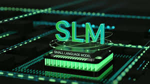

Small Language Models: Bringing Conversational AI to Edge Devices

Large language models have transformed natural language processing, but their size makes them impractical for embedded systems. In this project, I built a Small Language Model (SLM) with fewer than 100,000 parameters for on-device healthcare conversation, achieving 89% accuracy on the GPX10 platform with real-time, fully on-device inference.
What Are Small Language Models?
Small Language Models are compact neural networks that perform language tasks — text generation, classification, and conversation — using a tiny fraction of the parameters found in large models like GPT. Instead of billions of parameters, an SLM might use thousands. By narrowing the scope to a specific domain, an SLM can deliver strong, useful performance while running entirely on resource-constrained hardware. This makes them ideal for edge AI, where memory, compute, and power are limited and data privacy matters.
Data Preparation and Training
Data Collection
Healthcare-related conversational data was collected and organized into structured training samples representing realistic question-and-response exchanges.
Tokenization
The raw text was converted into token representations suitable for language model training, mapping words and sub-words to numerical IDs the model can process.
Data Preprocessing
Several preprocessing steps were performed to prepare a clean, consistent dataset:
- Text cleaning
- Normalization
- Dataset formatting
- Vocabulary creation
Model Architecture
Decoder-Only Small Language Model
The model used a decoder-only architecture — the same family of design behind modern generative language models — but intentionally kept lightweight. This balance preserved useful conversational capabilities while keeping the parameter count low enough for embedded deployment.
Training
The model was trained on the next-token prediction objective: given a sequence of tokens, predict the most likely next token. Repeated across the dataset, this enables the model to generate coherent conversational responses one token at a time.
Results
| Metric | Result |
|---|---|
| Architecture | Decoder-Only SLM |
| Parameters | < 100K |
| Platform | GPX10 |
| Accuracy | 89% |
| Inference | On-Device |
Model Characteristics
- Less than 100,000 parameters
- Optimized for embedded deployment
- Low memory footprint
- Real-time inference capability
Key Takeaways
- Large language models are powerful but often unsuitable for embedded systems.
- Small Language Models enable practical NLP applications on edge devices.
- SLMs offer faster inference, lower power consumption, and improved privacy.
- Domain-specific SLMs can achieve strong performance with a fraction of the parameters.
- Edge AI represents a major opportunity for efficient language models.